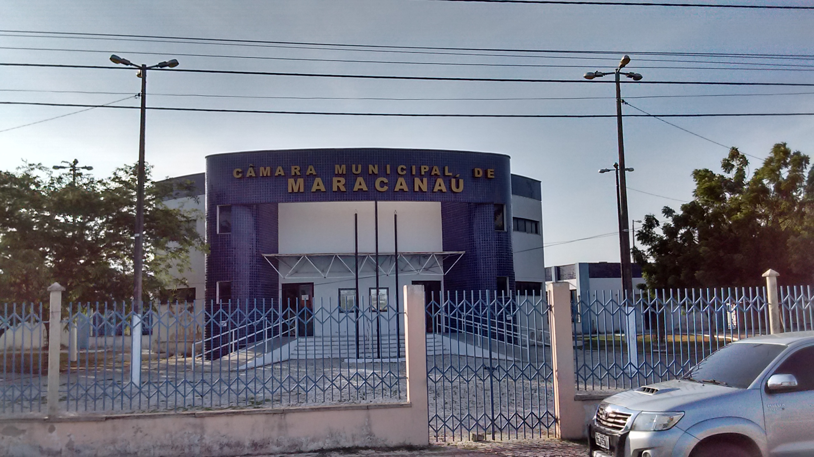
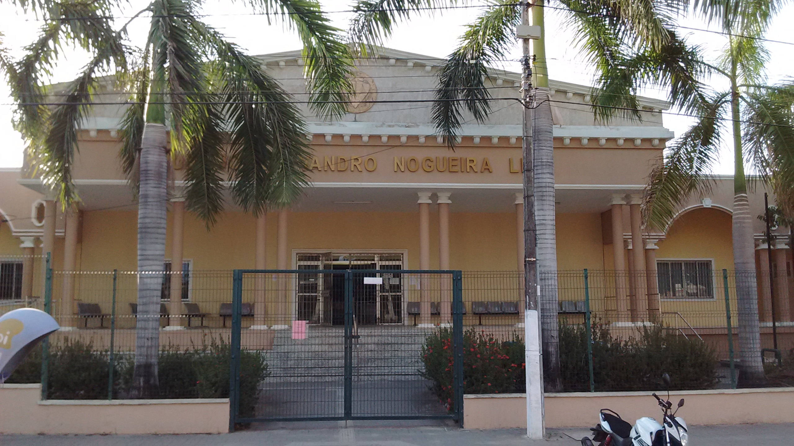
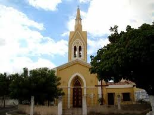

Geoinfos
Informações técnicas sobre relevo, população, IDH etc.
| INFORMAÇÕES | |
|---|---|
| Municípios limítrofes | Fortaleza, Pacatuba, Maranguape, Caucaia |
| Fundação | 8 de janeiro de 1890 (131 anos) |
| População total | 229 458 hab. |
| Densidade | 2 184,5 hab./km² |
| Área total | 105,041 km² |
| Clima | Tropical |
| Altitude | 43 m |
| IDH | 0,686 — médio |
| PIB | 10 456 281,75 mil |
| INFORMAÇÕES TERRITORIAIS | |
|---|---|
| Número de habitantes | 227 886 habitantes |
| Superfície de Maracanaú |
11 133 hectares
111,33 km² (42,98 sq mi) |
| Densidade populacional | 2 046,9 ha./km² |
| Altitude de Maracanaú | 43 metros de altitude |
| Coordenadas geográficas decimais |
Latitude:
-3.87821
Longitude: -38.626 |
| Coordenadas geográficas sexagesimais | Latitude: 3° 52' 42'' Sul , Longitude: 38° 37' 34'' Oeste |
| INFORMAÇÕES DO MUNICÍPIO | |
|---|---|
| Endereço da Prefeitura Municipal de Maracanaú |
Maracanaú
Prefeitura de Maracanaú
Palácio Antonio Gonçalves - Rua 1, 652 - Nova Maracanaú MARACANAÚ - CE, 61905-430 Brasil Work (85) 3371-8509 Fax (85) 3371-8517 |
| Telefone da prefeitura |
(85) 3371-8509
Internacional: +55 (85) 3371-8509 |
| Fax |
(85) 3371-8517
Internacional: +55 (85) 3371-8517 |
| Endereço electrónicoda prefeitura |
A carregar...
|
| Site oficial do município | Maracanaú.ce.gov.br |
| INFORMAÇÕES DO ADMINISTRATIVAS | ||
|---|---|---|
| Prefeito de Maracanaú | Jose Firmo CamurAa Neto | |
| Partido politico | PR | |
| INFORMAÇÕES DE TRANSPORTE | |
|---|---|
| Transporte urbano disponível | --- |
| Aeroporto |
Aeroporto Internacional Pinto Martins 15.4 km
Aeroporto de Sobral 191.4 km
Aeroporto Dix-Sept Rosado 203.3 km
|
| INFORMAÇÕES DE DISTÂNCIA A OUTRAS CIDADES | ||
|---|---|---|
| São Paulo : 2353 km | Rio de Janeiro : 2175 km | Brasília : 1671 km |
| Salvador : 1012 km | Belo Horizonte : 1866 km | Manaus : 2379 km |
| Curitiba : 2655 km | Recife : 623 km mais perto | Goiânia : 1838 km |
| Belém : 1131 km | Porto Alegre : 3199 km | Guarulhos : 2332 km |
| Campinas : 2305 km | São Luís : 649 km | São Gonçalo : 2182 km |
| Distância calculada em linha reta! | ||
Fonte: Wikipedia e Cidade Brasil
História
Conheça mais sobre a história de Maracanaú.
Origem e emancipação O atual território do município, na época da chegada dos primeiros europeus, era habitado pelos índios pitaguaris,[7] Jaçanaú, Mucunã e Cágado. Dos aldeamentos destas etnias, surgiu o povoamento da Lagoa de Maracanaú e, depois, o das lagoas de Jaçanaú e pajuçara. No ano de 1648, esses índios receberam a visita dos holandeses, que cartografaram as roças de mandioca e milho, bem como os caminhos indígenas, durante a expedição em busca das minas de prata na Serra de Maranguape e Taquara.[8] As ditas roças de mandioca e milho foram expandidas durante o tempo em que Mathias Beck administrou o Ceará a partir de sua base militar e administrativa: o Forte Schoonenborch.[9] Maracanaú figurou como parte de Maranguape até que este, em 1875, viu-se diante de uma grande transformação, com a inauguração da Estrada de Ferro de Baturité e a estação de trem.[10] No século XX, cresceu o povoamento em torno de quatro instituições: o trem metropolitano — ramal Maranguape/Fortaleza, o Sanatório de Maracanaú (hoje Hospital Municipal), a Colônia Antônio Justa e o Instituto Carneiro de Mendonça — Centro de Reabilitação de Menores. Nos anos 1970, Maracanaú sofreu grande transformação quando foi escolhido para sediar o Distrito Industrial de Fortaleza. Em 1983, Maracanaú emancipou-se definitivamente de Maranguape, através da ação política do Movimento pela Emancipação de Maracanaú, um agrupamento de políticos com interesses diretamente ligados a Maracanaú. Os vereadores da Câmara Municipal de Maranguape deram forte apoio à luta pela emancipação do município. Após a conquista da condição de município, o primeiro prefeito eleito foi Almir Dutra. Ele, no entanto, veio a ser assassinado em 27 de fevereiro de 1987. A prefeitura passou, então, a ser administrada pelo vice-prefeito José Raimundo. A cidade hoje o homenageia, pondo seu nome em edificações como o estádio em construção na cidade. Fatos sociais e históricos Ainda quando era de Maranguape, Maracanaú tinha fama de abrigar doentes e menores infratores. Em 1930, Getúlio Vargas sobe ao poder por meio de um golpe militar. Como presidente, enviou governadores interventores aos estados brasileiros. Na mesma época, foi construída uma escola para abrigar meninos de rua e delinquentes juvenis hás ordens do então interventor Roberto Carneiro de Mendonça. A Escola Santo Antônio do Buraco abrigava e educava no estilo militar jovens em situações de riscos.[11] A escola foi erguida e inaugurada em 1932, ano onde o Ceará passava por uma lastimável seca. Localizado no bairro Horto Florestal, ao lado do Vila das Flores (bairro de Pacatuba), Santo Antônio do Buraco tornou-se, um prédio, Batalhão da PM e, outro, uma escola estadual nomeada de Carneiro Mendonça. Uma década depois, no dia 15 de dezembro[12] de 1942, foi fundada a Colônia Antônio Justa, conhecida popularmente como "colônia dos leprosos", tinha como objetivo o tratamento de hanseníase e o isolamentos social dos portadores dessa doença. O tratamento de hanseníase no estado tinha começado em 1928. Em Maracanaú os tratmentos de isolamento do paciente seguiu até a segunda metade do século XX, recheado de medo e preconceito com os portadores da doença.[13]. O centro de tratamento foi reinaugurando em 2006, com uma cooperação entre Secretaria de Saúde do Ceará e o Ministério da Saúde, abandonando os métodos de tratamento antiguados. A colônia fica localizada num bairro de mesmo nome, perto da Câmara Municipal de Maracanaú. A Estação de Trem de Maracanaú, construída em 1875, foi demolida em 1984, dando lugar à uma nova estação de trem, também movido à vapor.[14] Foi em 2012 que o trem foi trocado pelo metrô. A estação de trem e a Igreja Matriz de Maracanaú foram os principais responsáveis pelo início da Praça Central, também conhecida como Praça Padre Holanda do Vale.
Pontos Turísticos
Saiba mais sobre os melhores lugares e o que fazer em Maracanaú.
Câmara Municipal
Fórum José Evandro Nogueira Lima. Maracanaú, Ceará, Brasil.
Igreja Matriz de Maracanaú
Estádio Almir Dutra
.jpg)
Como Chegar?
Veja como chegar nos melhores pontos de Maracanaú